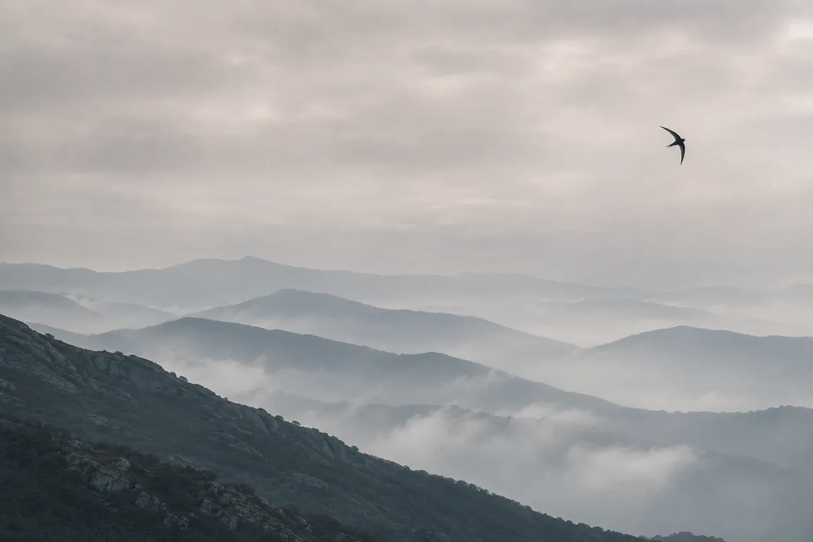

About
Gauss-K
Gauss-K is an academic pseudonym chosen to preserve personal privacy and to let ideas speak for themselves. What gives a claim weight is the reasoning and evidence behind it.

Perspective
A bird at heart
Gauss-K seeks the wider view, where seemingly distant ideas may reveal a common structure. History and philosophy offer a way to question inherited assumptions. Mathematics and observation keep the inquiry grounded.
In the age of AI, the distance between the farthest horizon and the smallest detail may become easier to bridge.
Research principles
Open inquiry
Gauss-K welcomes rigorous criticism and independent verification. The pursuit of truth takes precedence over defending any particular theory, including Complex Relativity itself.
Questions about an assumption, a step in a derivation, or a possible counterexample are especially welcome.
Contact